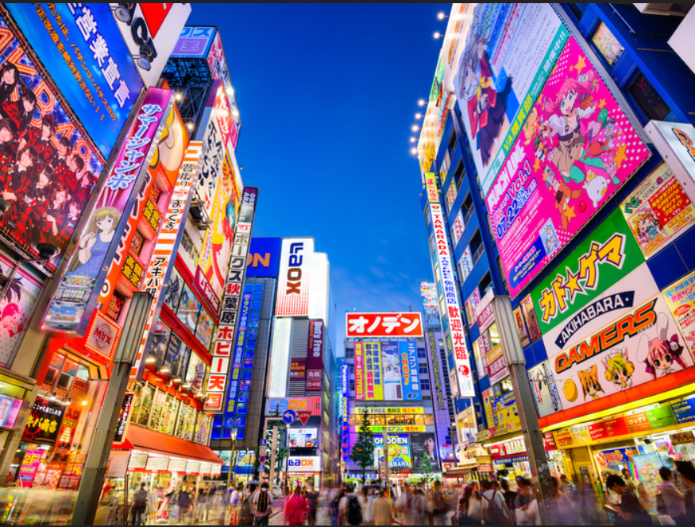
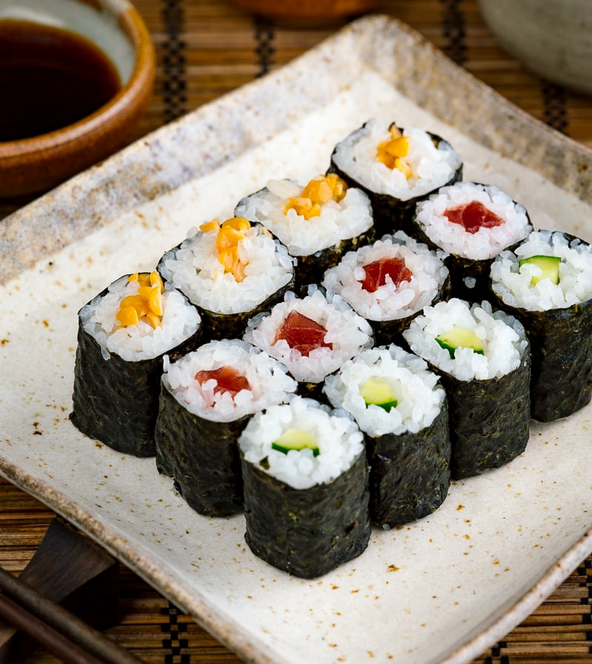
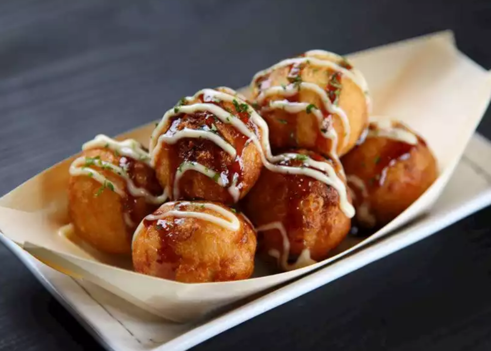
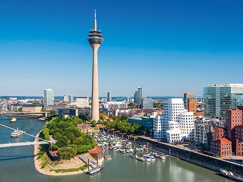
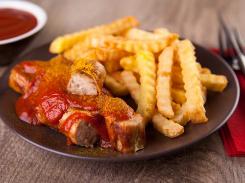
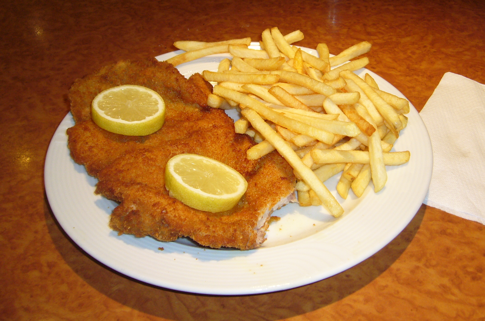

1. Japan
Japan offers up a real feast for travelers, with mountainside onsen (hot spring) villages, sleepy beach-lined islands and buzzing megacities
all on the menu. You could arguably spend a lifetime sampling the country’s delights, but some towns and sights are staples to any great Japan trip.
Places to see
-
Tokyo
Tokyo is a city forever reaching into the future, pushing the boundaries of what's possible on densely populated, earthquake-prone land, adding
ever taller, sleeker structures. It's Japan's top spot for contemporary art and architecture, pop culture, shopping, drinking and entertainment.
But more than any one sight, it's the city itself that enchants visitors. It's a sprawling, organic thing, stretching as far as the eye can see.
Always changing and with a diverse collection of neighborhoods, no two experiences of Tokyo are ever the same.
-
Kyoto

Kyoto, Japan's imperial capital for a thousand years, is home to more than a thousand temples. Among them are the monumental,
like Kinkaku-ji (an exquisite pavilion sheathed entirely in gold leaf), and the meditative, like Ryōan-ji, with its stark Zen rock garden.
And temples are only the start of it: there's the culture of tea, which you can appreciate at one of the city's many elegant teahouses;
the art of the geisha, those iconic performers of traditional music and dance; and also a rich food culture, including kaiseki (Japanese haute cuisine).
Food
-
Sushi
Sushi is the most famous Japanese dish outside of Japan, and one of the most popular dishes among the Japanese.
In past centuries, "sushi" referred to pickled fish preserved in vinegar. Nowadays sushi can be defined as a dish containing rice that has been prepared with sushi vinegar.
-
Takoyaki
Takoyaki are round balls of fluffy dough that are smothered with a special savory takoyaki sauce and have a tasty piece of octopus meat at the center.
Mostly served as street food that's found especially at summer festivals in Japan
2. Germany
One of Europe’s largest countries, Germany encompasses a wide variety of landscapes: the tall, sheer mountains of the south; the sandy, rolling plains of the north;
the forested hills of the urbanized west; and the plains of the agricultural east. At the spiritual heart of the country is the magnificent east-central city of Berlin.
Places to see
-
Berlin

The German capital is a history packed city. Devastated at the end of World War II and divided by a Wall for 28 years, Berlin regains its former splendor
at great strides. There is a wide variety of activities, day trips and excursions in Berlin that will wrap visitors up in its complex history.
The DDR Museum offers visitors a unique way of discovering the socialist state of East Germany or German Democratic Republic.
Moreover, it is simply priceless to feast on a delicious currywurst accompanied by a good German beer near the Brandenburg Gate.
-
Dusseldorf
A grand city in West Germany, Dusseldorf serves as the fashion and arts centre of the country. It's a beautiful city lying along
the majestic Rhine river, up until the confluence of the river with the Dussel tributary. An economic hub of the region,
this city screams modern with its contemporary and eclectic architecture, a vibrant nightlife and even livelier arts culture that keep
residents engaged and energised all through the day.
Food
-
Currywurst
The dish is composed of a bratwurst that has been lovingly deep-fried, sliced into bite-sized sections and served with a distinctive curry ketchup sauce
and a finishing dusting of curry powder. It is estimated that 800 million currywurst are sold every year in Germany, with over 100 million in Berlin alone!
-
Schnitzel
Schnitzel is a thin meat cutlet, pounded until tender and then breaded and fried, that is a culinary staple in German-speaking countries and communities.
The meat used in a schnitzel can come from any of several animals, but it is always cut away from the bone and thinly sliced.